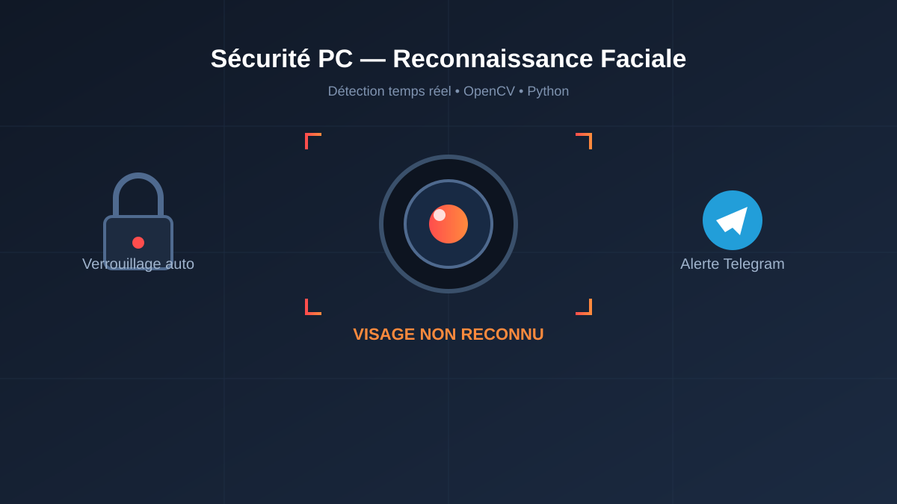

Système de Sécurité PC
par Reconnaissance Faciale en Temps Réel
Verrouillage automatique de l'ordinateur et alertes Telegram instantanées
dès qu'un visage inconnu est détecté par la webcam.

Projet Personnel
Application de sécurité fonctionnant en local sur un PC, sans interface web publique — pensée comme une couche de protection physique supplémentaire pour l'ordinateur.
Description du Projet
Ce projet est né d'un besoin concret : savoir si quelqu'un d'autre que moi se trouve devant mon ordinateur, même quelques secondes, et pouvoir réagir automatiquement. Le système surveille en continu le flux de la webcam, reconnaît mon visage grâce à un modèle entraîné sur mes propres photos, et déclenche un verrouillage immédiat de la session Windows dès qu'un visage non reconnu apparaît dans le champ de la caméra.
Fonctionnalités Principales
Reconnaissance en temps réel
Analyse continue du flux vidéo de la webcam pour détecter et identifier les visages présents devant l'écran.
Verrouillage automatique
Verrouillage immédiat de la session dès qu'un visage inconnu est détecté, sans intervention manuelle.
Alertes Telegram avec photo
Envoi automatique d'un message et d'une photo via l'API Telegram Bot dès qu'une intrusion est détectée.
Détection d'anomalies caméra
Détection d'une caméra obstruée ou d'une absence prolongée devant l'écran, avec verrouillage préventif.
Comment ça fonctionne
- 1. Capture
La webcam capture un flux vidéo continu, traité image par image en Python avec OpenCV.
- 2. Détection du visage
Un classifieur de détection de visages localise les visages présents dans chaque image.
- 3. Reconnaissance
Le modèle LBPH (Local Binary Patterns Histograms) compare le visage détecté à mon visage de référence et calcule un score de confiance.
- 4. Décision
Si le visage n'est pas reconnu, si la caméra est obstruée, ou si aucun visage n'est détecté pendant une durée prolongée, le système déclenche une action.
- 5. Action & alerte
La session est verrouillée automatiquement et une photo accompagnée d'un message est envoyée instantanément via le bot Telegram.
Technologies Utilisées
Vision par Ordinateur
- Python
- OpenCV
- LBPH Face Recognizer
- Haar Cascade (détection)
Automatisation Système
- Verrouillage de session Windows
- Surveillance en arrière-plan
- Détection d'inactivité
Notifications
- Telegram Bot API
- Envoi de photo en temps réel
- Messages d'alerte horodatés
Défis et Solutions
Défi 1 : Faux positifs / faux négatifs
Solution : ajustement du seuil de confiance du modèle LBPH et tests dans différentes conditions de luminosité pour fiabiliser la reconnaissance.
Défi 2 : Performance en temps réel
Solution : optimisation de la fréquence de capture et du traitement d'image pour ne pas ralentir le PC pendant la surveillance continue.
Défi 3 : Détection d'absence vs. simple mouvement
Solution : mise en place d'une temporisation avant de déclencher le verrouillage, pour éviter les faux déclenchements lors de courtes absences.
Défi 4 : Caméra volontairement cachée
Solution : détection d'une image anormalement sombre ou uniforme pour identifier une obstruction de la caméra et déclencher une alerte.
Limites Actuelles & Pistes d'Amélioration
- Reconnaissance d'un seul utilisateur autorisé à la fois (pas de gestion multi-profils pour l'instant).
- Pas de protection anti-spoofing (différenciation entre un vrai visage et une photo) — amélioration envisagée avec de la détection de profondeur ou de clignement des yeux.
- Sensibilité aux conditions de très faible luminosité.
- Migration possible vers un modèle de deep learning (ex. FaceNet) pour une reconnaissance plus robuste.